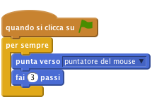
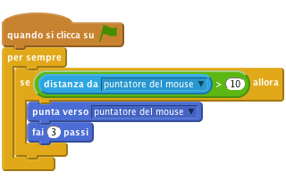
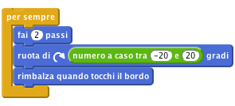
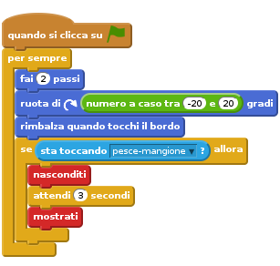
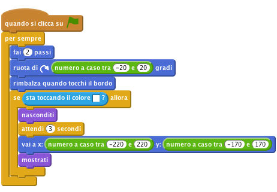
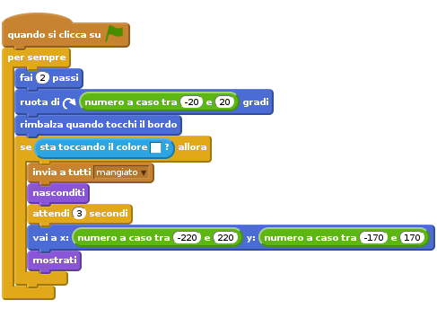
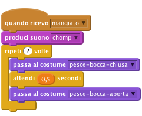

Introduzione
In questo esercizio creiamo un gioco in cui un grande pesce affamato dovra’ mangiare tutte le prede che gli nuotano attorno.

Passo 1: Crea uno sprite che segue il mouse
Facciamo nuotare il Pesce Mangione nel mare!
Lista delle Attivita’
- Crea un nuovo progetto Scratch. Rimuovi il gatto Felix con click-destro e seleziona cancella.
- Prima di tutto aggiungiamo uno sfondo. Nel tab
Sfondiaggiungi un nuovo sfondo. Fai click suScegli uno sfondo dalla libreria. Seleziona underwater3 dalla categoria Natura. Cancella lo sfondo originale. - Adesso aggiungi uno sprite dalla cartella Resources del progetto. Carica lo sprite pesce-bocca-aperta.png. Chiamalo
pesce-mangione - Fai click sulla
**i**blu e assicurati che il pesce abbia unostile di rotazioneuguale a sinistra-destra - Adesso seleziona il tab
Costumie importa il costume pesce-bocca-chiusa.png dalla cartella Resources del progetto. Adesso crea uno script per il Pesce Mangione in modo che segua il mouse:

Verifica il tuo progetto
Fai click sulla bandierina verde.
- Muovi il mouse nel mare. Vedi il pesce che segue il mouse?
- Cosa succede se non muovi il mouse? Perche’ questo comportamento?
Salva il tuo progetto
Puoi evitare questo comportamento (Pesce Mangione che rimbalza come un matto) facendo in modo che il pesce si muova solo quando non e’ troppo vicino al mouse. (il blocco distanza da e nella palette Sensori)

Cose da provare
- Se vuoi puoi usare un numero diverso nello script. In che modo il cambiamento fa muovere Pesce Mangione?
- Cambia la soglia della distanza con un numero grande (esempio: 100) o con un numero piccolo (esempio: 1).
- Cambia il numero di passi che il pesce compie con un numero grande (esempio: 20) o piccolo (esempio: 1 o 0)
Salva il tuo progetto
Passo 2: Aggiungiamo delle prede
Ed ora aggiungiamo qualcosa da mangiare per il Pesce Mangione!!
Lista delle Attivita’
- Crea un nuovo sprite dalla libreria di Scratch. Usa startfish dalla categoria Animali
- Ridimensiona lo sprite rendendolo piu’ piccolo
Crea uno script per far nuotare la preda. Vogliamo che si muova in modo casuale. Facciamola muovere in avanti per un po’, poi facciamola girare a destra o sinistra casualmente e cosi’ via.

Verifica il tuo progetto
Fai click sulla bandierina verde e guarda le prede nuotare nel mare.
- Nuotano in base alle tue aspettative?
- Il movimento e’ realistico?
Al momento le prede ed il Pesce Mangione non interagiscono. Risolveremo questo problema nel prossimo passo.
Salva il tuo progetto
Cose da provare
- Prova a cambiare i numeri nel blocco
numero a caso. La preda si muove in un modo diverso? - Cosa fa il blocco
rimbalza quando tocchi il bordo? Prova a rimuoverlo e guarda che sucede.
Passo 3: Pesce Mangione si mangia una preda
Adesso volgiamo che il Pesce Mangione possa mangiare una preda! Quando il pesce ha la preda in bocca, devono accadere due cose:
- Il Pesce Mangione deve chiudere la bocca ed emettere un suono.
- La preda deve scomparire e poi riapparire un attimo dopo.
Lista delle Attivita’
Prima di tutto facciamo scomparire la preda se viene in contato con il Pesce Mangione, poi facciamola riapparire 3 secondi dopo. Usa il blocco
sta toccandoper capire quando la preda e’ in contatto con il pesce.
Verifica il tuo progetto
Prova il tuo gioco dinuovo.
- Riscontri qualche problema? Nota che la preda scompare anche se non tocca il Pesce Mangione. Inoltre il pesce puo’ aspettare 3 secondi e mangiarsi la preda non appena riappare - non e’ molto onesto!!
Salva il tuo progetto
- Come possiamo essere sicuri che la preda scompaia solo quando tocca la bocca del pesce? Possiamo usare il blocco
sta toccando il coloreper verificare se sta toccando i denti blue del pesce. Sostituisci il bloccosta toccandocon un bloccosta toccando il colorenello script. Fai click nel colore nel blocco e poi fai click sui denti del pesce. Possiamo anche far riapparire la preda in un punto casuale usando un blocco
vai aed assegnando un valore casuale per x e y.
Verifica il tuo progetto
Prova il tuo gioco dinuovo.
- Vedi la preda scomparire solo quando tocca la bocc del pesce?
- Riappare in un punto casuale invece che nel punto in cui e’ stat mangiata?
Salva il tuo progetto
Il pesce deve sapere quando ha mangiato una preda cosi’ puo’ emettere un suono a cambiare costume (chiudere la bocca). Per fare questo possiamo usare un blocco invia a tutti dicendo a tutti che la preda e’ stata mangiata.

Adesso vogliamo che il pesce risponda al messaggio mandato emettendo un suono “chomp” e chiudendo le mascelle.
- Aggiungi il suono chomp.mp3 dalla cartella Resources del progetto per lo sprite
pesce-mangione. Aggiungi un nuovo script per il pesce che risponda al messaggio
mangiatoinviato dalla preda. Lo script deve far emettre il suono al pesce e fargli chiudere la bocca cambiando costumepassa al costume. Dopo un po’ deve fargli riaprire la bocca dinuovo cambiando costume.
Adesso che il nostro Pesce Mangione e’ capace di mangiare, riempiamo il mare di prede. Fai click con il taso destro sulla predea e duplica per 3 volte
Verifica il tuo progetto
Fai click sulla bandierina verde.
- Il Pesce Mangione riesce a mangiare tutte le prede del mare?
Salva il tuo progetto
Cosa a cui pensare
Perche’ dobbiamo aggiungere il blocco mostrati all’inizio dello script della preda? Pensa a cosa succederebbe se la preda fosse mangiata ed il gioco fermato prima che riappaia. Cosa succederebbe se adesso ricomnciassimo il gioco?
Ben Fatto!! Hai finito il gioco base. Ci sono altre cose che puoi fare con il tuo gioco. Sei pronto per la sfida?
Sfida 1: Fai muovere le prede in modo diverso
In questo momento tutte le prede si muovono nello stesso modo. Riesci a farne muovere una in modo diverso? Suggerimento: Non sprecare troppo tempo prima di aver letto le altre attivita’ di questo progetto.
Scegli una delle prede per fare degli esperimenti. Siccome hanno lo stesso costume, cambia il suo colore con il blocco cambia effetto colore. In questo modo puo’ rendere la tua preda unica in mezzo alle altre prede.
Fa si che questa preda si muova piu’ lentamente delle altre. Suggerimento: Guarda il blocco fai (2) passi.
Verifica il tuo progetto
- Vedi la preda muoversi piu’ lentamente?
- Il gioco e’ migliorato?
Se hai fatto questo fai muovere un’altra preda piu’ velocemente delle altre.
Questi cambiamenti rendono il gioco migliore?
Suggerimento: Se le tue prede girano in cerchio, verifica i valori del blocco numero a caso nel blocco ruota di.
Che ne dici di rendere il comportamento di ogni preda diverso dalle altre, magari usando combinazioni diverse dei cambiamenti appena visti?
Questi cambiamenti rendono il gioco migliore? Rendono il gioco piu’ interessante, divertente, difficile o facile? C’e’ qualche cambiamento che e’ megliore degli altri?
Salva il tuo progetto
Sfida 2: Fai evitare alla preda il Pesce Mangione
Le prede in questo gioco non sono molto furbe!! Nuotano a caso nel mare finche’ non vengono mangiate. Una vera preda cerca sempre di stare alla larga dal suo predatore. Facciamo in modo che una delle prede cerchi di stare il piu’ lontano possibile dal predatore.
In Scratch non c’e’ nessun blocco che ci dice la direzione di un altro sprite. Tuttavia possiamo dirigere uno sprite verso un’altro e poi fargli invertire la marcia. I blocchi di cui hai bisogno sono nella palette Movimento
In base a questa idea, fa si’ che una delle prede nuoti sempre in direzione opposta al pesce.
Potra’ capitare che la preda rimanga bloccata in un angolo. Puoi far si’ che la preda nuoti in direzione opposta al pesce solo quando il pesce e’ vicino. Suggerimento: Guarda come abbiamo usato il blocco distanza da precedentemente nel gioco.
Verifica il tuo progetto
- Adesso la preda e’ piu’ difficile da catturare?
- Il gioco e’ adesso migliore?
Salva il tuo progetto
Sfida 3: Aggiungi un punteggio
Come puoi sapere chi e’ il giocatore migliore? Ti serve un modo per tenere un punteggio. Guarda la Keep Score scratch card per farti un idea su come fare.
Dove dovresti posizionare il blocco che cambia il punteggio?
Assicurati che il punteggio sia azzerato all’inizio del gioco. Dove dovresti mettere questo blocco?
Verifica il tuo progetto
- All’inizio del gioco il punteggio torna a zero?
Salva il tuo progetto
Sfida 4: Aggiungi un conto alla rovescia
Fissa un tempo massimo per una partita. Quante prede riesci a catturare in 30 secondi?
Guarda la Timer scratch card per capire come aggiungere un time al gioco. Inizia facendo durare il gioco 30 secondi
Verifica il tuo progetto
- Il conto alla rovescia inizia da 30?
- Viene descrementato alla giusta velocita’?
- Riesci a catturare una preda mentre il timer scorre?
- Il gioco si ferma quando il conto alla rovescia raggiunge lo zero?
Salva il tuo progetto
Sfida 5: Aggiungi un punteggio bonus
Assegna un grosso punteggio bonus se il giocatore riesce a mangiare 3 prede contemporaneamente? Come puoi sapere quante prede sono state mangiate?
Suggerimento: Un modo per farlo e’ usare una variabile che conta quante prede stanno nuotando nel mare.
Salva il tuo progetto
Sfida 6: Cambia il gioco: mantieni una preda viva!
Qualche volta puoi avere una buona idea partendo da una gia’ esistente e rovesciandola.
Cambia il gioco in modo che anziche’ controllare un pesce che vuole catturare le prede, controlli una preda in fuga da tanti Pesci Mangioni. Quanto tempo riesci a resistere prima che vieni mangiata? In questo caso anziche’ avere un punteggio perche’ non dare 3 vite alla preda e finire il gioco quando tutte le vite sono consumate?
Salva il tuo progetto
Ben fatto!!! Hai finito con questo esercizio. Adesso divertiti con il tuo nuovo gioco!!!
Ehi, non dimenticare che puoi condividere il tuo gioco con tutti i tuoi amici e familiari. Basta che fai selezioni il menu File e poi Share to website!!